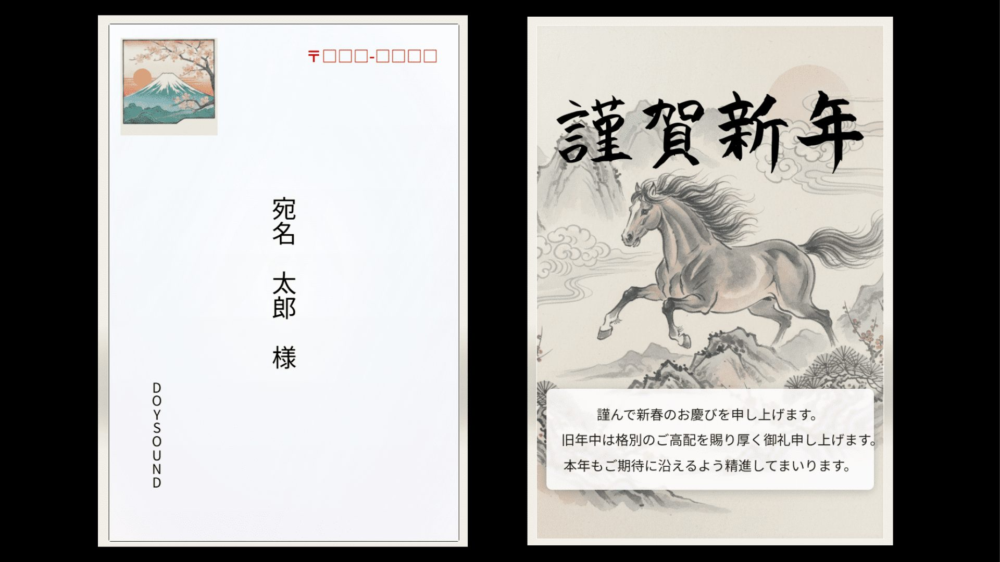
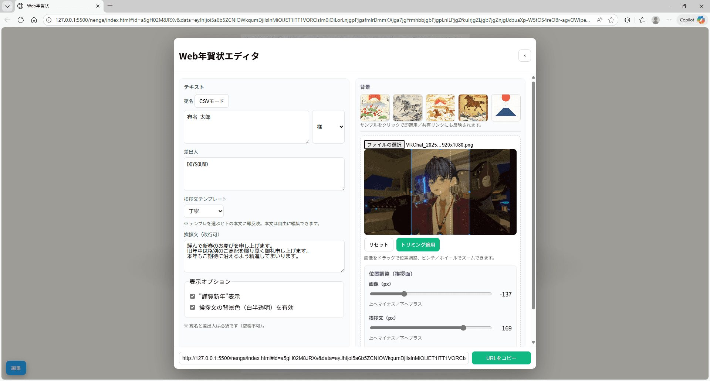
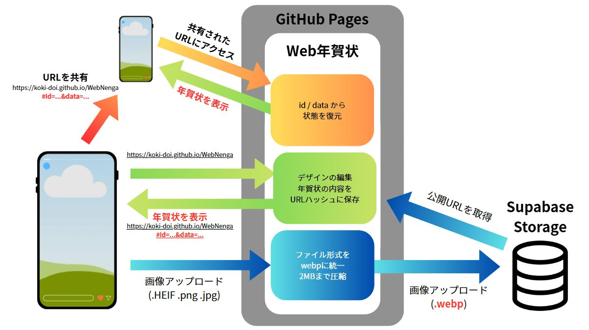

概要
ブラウザ上で動くWeb年賀状アプリです。宛名・敬称・差出人・挨拶文・背景画像を入力すると、その場で年賀状に反映され、同時に共有用のURLも更新されます。URLを共有するだけで、相手はブラウザから年賀状を閲覧できます。
Screenshots


3Dカード表現
カード自体は CSS の 3D Transform で描画しています。読み込み時にはカードが落ちてくるドロップアニメーションを取り入れており、ポインタの位置に応じてカードが少し傾いたり、光沢が動いたりします。
スマートフォンではジャイロセンサーの値を読み取り、端末を傾けるとカードの向きとハイライトが連動して変化するようにして、手に持って眺めている感覚を再現しました。
システム構成

年賀状の内容（宛名・差出人・挨拶文・背景画像URL・各種フラグ）は、ブラウザ側で1つの状態オブジェクトとしてまとめて扱っています。このオブジェクトをJSON化し、さらにBase64URLへ変換して、「#id=...&data=...」という形でURLハッシュに載せます。受信側のブラウザは location.hash から data を取り出してデコードし、その状態を復元してカードを表示する、という流れです。
背景画像はすべてクライアント側で処理します。編集パネルで選んだ画像ファイルをCropper.jsに渡してトリミングし、HEIF/HEIC形式の画像はheic2anyでJPEGに変換します。その後、最大辺を基準にリサイズしてWebPに再エンコードします。
得られたBlobはObject URLにしてすぐプレビューに反映し、同じデータをSupabase Storageにもアップロードします。getPublicUrlで取得した公開URLを状態オブジェクトに保存し、以降はそのURLを背景画像の参照先として使う構成になっています。